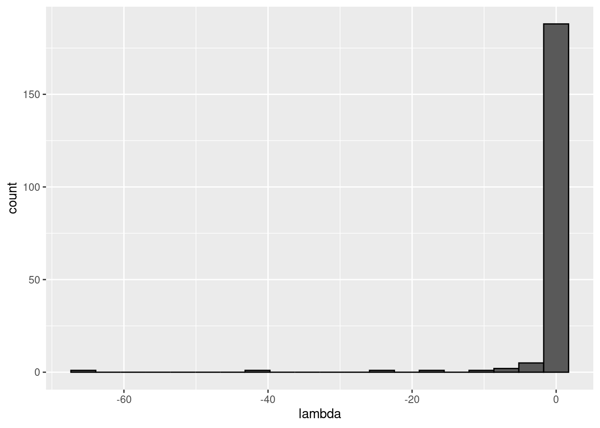

Lecture 5 Ecological assembly
Lesson plan:
- We have seen in the previous lecture that a large ecological community will almost invariably be unstable, possibly leading to extinctions. It is therefore natural to ask what happens when either a feasible equilibrium does not exist, or it is unstable. In particular, we want to know how many species can persist.
- We show that the GLV model can give rise to all sort of dynamics, including limit cycles and chaos.
- Despite this fact, the persistence of all species requires the existence of a feasible equilibrium, which is the time-average of the species’ densities for complex attractors.
- We introduce D-stability, allowing us to write a Lyapunov function to determine global stability in GLV models.
- We conclude by analyzing the MacArthur’s consumer-resource model, highlighting its deep connection to GLV.
5.1 Assembly
We call assembly the process by which a community is constituted by adding species sequentially. Imagine starting with a bare environment, and introducing the first species. If the species can grow in the new environment, it will establish, and if not, it will go extinct. Mathematically, we assume that new species are introduced at very low abundance, so that they do not experience self-limitation due to crowding, and that invasion are spaced in time so that the dynamics can play out before the next invasion happens. For example, consider the first species entering the system, and write the equation for the per-capita growth rate:
\[ \dfrac{1}{x_i(t)}\dfrac{dx_i(t)}{dt} = r_i + A_{ii} x_i(t) \] If \(x_i(0) \ll 1\), we can set \(A_{ii} x_i(0) \approx 0\), obtaining
\[ \dfrac{1}{x_i(t)}\dfrac{dx_i(t)}{dt} \approx r_i \]
That is, the species will establish if it has a positive growth rate in the new environment. Suppose that this is the case: then species \(i\) will grow to its equilibrium abundance \(x_i^\star = -r_i / A_{ii}\). Now add a second species. Its initial per-capita growth rate is going to be:
\[ \dfrac{1}{x_j(t)}\dfrac{dx_j(t)}{dt} = r_j + \sum_k A_{jk} x_k(t) \approx r_j + A_{ji}x_i^\star \]
Species \(j\) can therefore grow when rare if \(r_j + A_{ji}x_i^\star > 0\), i.e., \(r_j > -A_{ji}x_i^\star\). We call this type of inequality an “invasion criterion”.
If the species \(j\) can grow when rare, in general, it could a) grow initially, but then go extinct; b) displace species \(i\), sending it to extinction; c) coexist with species \(i\). By reiterating invasions with different species, we can assemble a large ecological community.
5.2 Invasion in multispecies communities
Now consider a pool of species (e.g., a metacommunity) and an environment (e.g., an island) in which some of the species are present, and coexisting at an equilibrium. We have \(n\) species in the pool, and \(k\) species in the environment. We want to write conditions for the invasibility of the equilibrium. To this end, we can re-arrange the rows and columns of \(A\), and the elements of \(r\) to obtain two blocks: one for the \(k\) species already in the community, and one for the \(n-k\) potential invaders.
The fixed point \(\bar{x}\) can be written as \[ \bar{x} = \left(\begin{array}{l} x^{(k)} \\ 0^{(n-k)} \end{array} \right) \] where \(x^{(k)}\) contains the density of the coexisting species. Similarly, the growth rates are
\[ r = \left(\begin{array}{l} r^{(k)} \\ r^{(n-k)} \end{array} \right) \] and the interaction matrix
\[ A = \begin{pmatrix} A^{(k,k)} & A^{(k, n- k)}\\ A^{(n-k,k)} & A^{(n-k, n- k)}\\ \end{pmatrix} \] where each block \(A^{(a,b)}\) contains the effects of the species in set \(b\) on the growth of the species in \(a\). For feasibility we need:
\[ x^{(k)} = -r^{(k)}\left(A^{(k,k)} \right)^{-1} > 0 \] Now we want to write the condition for the non-invasibility of the resident community by the other species in the metacommunity. For each species in \((n-k)\), we need to have a negative growth rate when invading:
\[ r^{(n-k)} + A^{(n-k,k)}x^{(k)} < 0 \]
an equilibrium \(\bar{x}\) for which a) the \(x^{(k)}\) is feasible and stable (when considering only the species in \(k\)) and b) no other species can invade when rare is called the feasible, stable, non-invasible solution or the saturated equilibrium.
5.3 Lyapunov stability and saturated equilibria
We have seen in previous lectures that, whenever there exists a matrix \(C\) such that \(CA + A^t C\) is negative definite and we have a feasible equilibrium \(x^\star\) then the equilibrium is globally stable. Now we consider the case in which a feasible equilibrium does not exist. However, we can prove that a saturated equilibrium exists and is unique: we have an equilibrium \(\bar{x}\) in which some components are positive and some are zero such that \(k\) species coexist at a globally stable equilibrium, and the remaining \((n-k)\) species cannot invade it.
Following Hofbauer and Sigmund (1998) (section 15.3), we write:
\[ V(x) = -\sum_i c_i (\bar{x}_i \log x_i - x_i) \] yielding:
\[ \begin{aligned} \dfrac{V(x)}{dt} &= -\sum_i c_i \left(\bar{x}_i \frac{d \log x_i}{dt} - \frac{d x_i}{dt} \right) \\ &= -\sum_i c_i \left( \bar{x}_i - x_i \right) \left( r_i + \sum_j A_{ij} x_j \right) \\ &= -\sum_i c_i \left( \bar{x}_i - x_i \right) \left( r_i + \sum_j A_{ij} (x_j - \bar{x}_j) + \sum_j A_{ij} \bar{x}_j \right) \\ &= \sum_{i,j} \left( \bar{x}_i - x_i \right) c_i A_{ij} \left( \bar{x}_j - x_j \right) - \sum_i c_i \left( \bar{x}_i - x_i \right) \left(r_i + \sum_j A_{ij} \bar{x}_j \right) \end{aligned} \]
The first term is negative for all \(x \neq \bar{x}\), and is zero at the saturated equilibrium point. The second term is zero for all \(\bar{x}_i > 0\): \(r_i + \sum_j A_{ij} \bar{x}_j = 0\), given that \(\bar{x}\) is an equilibrium for the species at positive density; for the remaining species (for which \(\bar{x}_i = 0\)), this amounts to the invasion criterion above, and must therefore be negative. As such \(V(x)\) is a Lyapunov function for the system, assuming negative values everywhere but at \(\bar{x}\).
5.4 How many species will coexist?
Here we investigate the simplest case in which \(A\) is symmetric and stable (and therefore Lyapunov Diagonally stable) matrix with random coefficients, and \(r\) is a vector of growth rates with random coefficients. For simplicity, we take the off-diagonal elements of \(A\) and the growth rates from a normal distribution centered at zero (the same would be found for any distribution symmetric about zero). This case was studied by Serván et al. (2018).
First, we are going to consider a trivial case, then simulate a more complex one, and finally outline the proof in Serván et al. (2018).
5.4.1 A trivial case
Suppose that the growth rates are drawn from a normal distribution centered at zero, and that the matrix \(A\) is diagonal and stable (i.e., species do not interact with each other; each species is self regulating). As such, a species will persist if and only if \(r_i > 0\). If we draw the growth rates from any distribution centered at zero, then the probability of having a positive growth rate is \(1/2\). Therefore, the number of coexisting species will follow the binomial distribution with parameters \(n\) and \(1/2\).
5.4.2 Simulating final composition
Now, let’s simulate cases in which species do interact with each other. First, we load the functions we’ve written before:
library(tidyverse)
library(deSolve)
# Generalized Lotka-Volterra model
GLV <- function(t, x, parameters){
with(as.list(c(x, parameters)), {
x[x < 10^-8] <- 0 # prevent numerical problems
dxdt <- x * (r + A %*% x)
list(dxdt)
})
}
# function to plot output
plot_ODE_output <- function(out){
out <- as.data.frame(out)
colnames(out) <- c("time", paste("sp", 1:(ncol(out) -1), sep = "_"))
out <- as_tibble(out) %>% gather(species, density, -time)
pl <- ggplot(data = out) +
aes(x = time, y = density, colour = species) +
geom_line()
show(pl)
return(out)
}
# general function to integrate GLV
integrate_GLV <- function(r, A, x0, maxtime = 100, steptime = 0.5){
times <- seq(0, maxtime, by = steptime)
parameters <- list(r = r, A = A)
# solve numerically
out <- ode(y = x0, times = times,
func = GLV, parms = parameters,
method = "ode45")
# plot and make into tidy form
out <- plot_ODE_output(out)
return(out)
}And then write functions to give us a (barely) stable, symmetric matrix \(A\), and random growth rates:
# function to build symmetric, Lyapunov Diagonally-stable matrix
build_LDstable <- function(n){
A <- matrix(0, n, n)
A[upper.tri(A)] <- rnorm(n * (n - 1) / 2)
# make symmetric
A <- A + t(A)
# now find the largest eigenvalue
l1A <- max(eigen(A, only.values = TRUE, symmetric = TRUE)$values)
if (l1A > 0){
# set the diagonal to make it stable
diag(A) <- diag(A) - l1A - 0.01
}
return(A)
}
# function to get random growth rates
build_randomr <- function(n){
return(rnorm(n))
}Now, we build a random system with seven species, and integrate the dynamics:
set.seed(5) # for reproducibility
n <- 7
A <- build_LDstable(n)
r <- build_randomr(n)
x0 <- runif(n)
out <- integrate_GLV(r, A, x0)
knitr::kable(
out %>%
filter(out$time == max(out$time)) %>%
mutate(density = ifelse(density < 10^-6, 0, density)) )| time | species | density |
|---|---|---|
| 100 | sp_1 | 0.4290300 |
| 100 | sp_2 | 0.2761030 |
| 100 | sp_3 | 0.0000000 |
| 100 | sp_4 | 0.4021761 |
| 100 | sp_5 | 0.0000000 |
| 100 | sp_6 | 0.6453202 |
| 100 | sp_7 | 0.5776840 |
As you can see, in this case, two species (3 and 5) go extinct, while the other ones reach a feasible equilibrium. Let’s try to start the system with species 3 and 5 at high abundance, to show that the equilibrium is indeed globally stable:

knitr::kable(out %>%
filter(out$time == max(out$time)) %>%
mutate(density = ifelse(density < 10^-6, 0, density)) )| time | species | density |
|---|---|---|
| 100 | sp_1 | 0.4290300 |
| 100 | sp_2 | 0.2761030 |
| 100 | sp_3 | 0.0000000 |
| 100 | sp_4 | 0.4021761 |
| 100 | sp_5 | 0.0000000 |
| 100 | sp_6 | 0.6453202 |
| 100 | sp_7 | 0.5776840 |
As you can see, the system still goes to the same equilibrium, with 3 and 5 extinct. Turns out, for this type of system, one does not even need to integrate dynamics: the Lemke–Howson algorithm can be adapted to solve the problem efficiently (Serván et al. 2018). I have coded up the algorithm already, and you can load the function get_final_composition(A, r) by typing:
[1] 0.4290300 0.2761030 0.0000000 0.4021761 0.0000000 0.6453202 0.5776840
5.5 A random zoo
In the case above, 5 species persisted. We can ask how many species will coexist in general under this parametrization. A good metaphor is that of the random zoo: take a large zoo, open all the cages, and return after fifty years. How many species will you find?
To simulate the random zoo, we take random matrices and random growth rates with \(n\) species, and tally the number of coexisting species over several simulations:
set.seed(1)
n <- 5
nsim <- 2000
results <- data.frame(simulation = 1:nsim, ncoexisting = rep(NA, nsim))
for (i in 1:nsim){
# build the matrix and vector
A <- build_LDstable(n)
r <- build_randomr(n)
xstar <- get_final_composition(A, r)
results$ncoexisting[i] <- sum(xstar > 0)
}
pl <- ggplot(data = results) +
aes(x = ncoexisting) +
geom_bar() +
scale_x_continuous("number of species coexisting", breaks = 0:10)
show(pl)
# add binomial distribution
tbinom <- data.frame(ncoexisting = 0:n,
expectation = nsim * dbinom(0:n, n, 0.5))
pl <- pl + geom_point(data = tbinom, aes(x = ncoexisting, y = expectation))
show(pl)
We find again that the number of coexisting species follows the binomial distribution with parameters \(n\) and \(1/2\) (i.e., exactly the same result found for non interacting species). To prove this fact, let’s begin with showing that the probability of having all species coexisting is \(1 / 2^n\). For this, we need \(x^\star = -r A^{-1}\) to be feasible. For each possible \(A\) (invertible) and \(r\), we have that the vector \(-r A^{-1}\) will display a certain pattern of signs. Proving that the probability that all \(n\) species coexist is \(1 / 2^n\) amounts to proving that all sign patterns are equally probable. To this end, define the matrix \(D_k = (-1)^{\delta_{ik}} \delta_{ij}\). This is like the identity matrix, but with element \(k\) of the diagonal set to \(-1\) instead of \(1\). We have that:
\[ (D_k A D_k) D_k x^\star = -D_k r \]
That is, by setting the \(k^\text{th}\) element of \(D_k\) to -1, we flip the sign of the \(k^\text{th}\) component of \(x^\star\). For example:
set.seed(2)
A <- build_LDstable(3)
r <- build_randomr(3)
# the equilibrium is not feasible
solve(A, -r)[1] -11.75292 26.47508 22.73981
# build matrix D_1
D_1 <- diag(c(-1, 1, 1))
# the multiplication changes the sign of a component of the solution
# making the equilibrium feasible
solve(D_1 %*% A %*% D_1, -D_1 %*% r) [,1][1,] 11.75292 [2,] 26.47508 [3,] 22.73981
Because of the symmetry assumption (i.e., we sampled all growth rates and off-diagonal elements from a distribution centered at zero), \((D_k A D_k)\) has the same distribution as \(A\), and \(D_k r\) the same distribution as \(r\). In fact, one can see that \((D_k A D_k)\) is also a similarity transformation, implying that the eigenvalues of \(A\) and \((D_k A D_k)\) are the same (i.e., the operation preserves stability):
[1] -0.010000 -1.601076 -3.665781
[1] -0.010000 -1.601076 -3.665781
We can repeat the operation several times, connecting each possible starting point to the feasible solution. Therefore, the probability of all species coexisting amounts to the probability of having chosen the “right” sequence of \(D_k\), which happens with probability \(1 / 2^n\). Notice that the same proof holds when the coefficients of \(A\) are sampled in pairs from a bivariate distribution (rather than having symmetric matrices), as long as the distribution is centered at zero, and the matrix is Lyapunov-Diagonally stable (Serván et al. (2018)). Using the same argument, one can prove that, under this parametrization, the probability of observing \(k\) species coexisting and \(n -k\) not being able to invade is exactly \(\binom{n}{k} \frac{1}{2^n}\) (Serván et al. (2018)).
5.6 Assembly and saturated equilibrium
Now let’s make it more complicated: we assemble an ecological community from the ground up. At each step, we introduce a species at low abundance, starting from an empty community. We then compute the new equilibrium, completing a step of the assembly:
assembly_one_step <- function(x, r, A){
n <- nrow(A)
invader <- sample(1:n, 1)
x[invader] <- 0.001 # introduce the invader at low abundance
present <- x > 0 # these are the species present now
# compute new equilibrium
y <- get_final_composition(A[present, present, drop = FALSE], r[present])
x[present] <- y
return(x)
}Now we can take a species pool along with their parameters, and try to assemble the system until we can no longer add any more species (i.e., until we reach a saturated equilibrium):
set.seed(7)
n <- 10
A <- build_LDstable(n)
r <- build_randomr(n)
# start with no species
x <- rep(0, n)
# assemble for 40 steps and keep track of richness and composition
ninvasions <- 40
results <- tibble(invasion = 1:ninvasions,
richness = rep(NA, ninvasions),
composition = rep(NA, ninvasions))
for (i in 1:ninvasions){
x <- assembly_one_step(x, r, A)
results$richness[i] <- sum(x > 0)
results$composition[i] <- paste((1:n)[x>0], collapse = "-")
}
knitr::kable(head(results))| invasion | richness | composition |
|---|---|---|
| 1 | 0 | |
| 2 | 0 | |
| 3 | 1 | 2 |
| 4 | 2 | 1-2 |
| 5 | 2 | 1-2 |
| 6 | 2 | 1-2 |
pl <- ggplot(results) + aes(x = invasion, y = richness, label = composition) +
geom_point() + geom_line() + geom_text(hjust = 0, nudge_y = 0.25, angle = 90)+
ylim(c(0, n * 1.25))
show(pl)
Now let’s roll back history and assemble again:
# start with no species
x <- rep(0, n)
# assemble for 40 steps and keep track of richness
ninvasions <- 40
results <- tibble(invasion = 1:ninvasions,
richness = rep(NA, ninvasions),
composition = rep(NA, ninvasions))
for (i in 1:ninvasions){
x <- assembly_one_step(x, r, A)
results$richness[i] <- sum(x > 0)
results$composition[i] <- paste((1:n)[x>0], collapse = "-")
}
knitr::kable(head(results))| invasion | richness | composition |
|---|---|---|
| 1 | 1 | 4 |
| 2 | 1 | 4 |
| 3 | 1 | 4 |
| 4 | 1 | 4 |
| 5 | 2 | 4-10 |
| 6 | 2 | 4-10 |
pl <- ggplot(results) + aes(x = invasion, y = richness, label = composition) +
geom_point() + geom_line() + geom_text(hjust = 0, nudge_y = 0.25, angle = 90)+
ylim(c(0, n * 1.25))
show(pl)
As you can see, despite taking a different assembly history, we reach the same final composition. In fact, this is exactly what we would expect if we were to throw all species in the environment at the same time:
[1] 1.7588344 2.5440743 0.0000000 0.7860178 1.8730535 2.5502055 0.6961259 [8] 1.6956878 0.0000000 0.0000000
[1] 1.7588344 2.5440743 0.0000000 0.7860178 1.8730535 2.5502055 0.6961259 [8] 1.6956878 0.0000000 0.0000000
As such, given enough time, any assembly history for a symmetric, stable matrix \(A\) will eventually reach the final composition represented by the saturated equilibrium (Serván, unpublished).
Interestingly, this is not the case when the matrix is not symmetric. Serván et al. (2018) conjectured however that the probability of finding a system whose final composition cannot be assembled one species at a time decreases rapidly with the size of the pool, as long as \(A\) is Lyapunov Diagonally stable.
5.7 Network spandrels
What is the network structure of the assembled community vs. that of the initial pool? Can we detect a signature of the forces acting on the community such that some species can persist, while other go extinct? To answer these questions, we start by considering a larger pool of species:
set.seed(1)
# initial pool
A <- build_LDstable(200)
r <- build_randomr(200)
# final composition
xstar <- get_final_composition(A, r)
A_pruned <- A[xstar > 0, xstar > 0]
r_pruned <- r[xstar > 0]Are the properties of matrix \(A\) different from those of the pruned version \(\tilde{A}\)? We probe this in two ways: first, we build a graph with the strongest interactions, and plot it.
##
## Attaching package: 'igraph'## The following objects are masked from 'package:dplyr':
##
## as_data_frame, groups, union## The following objects are masked from 'package:purrr':
##
## compose, simplify## The following object is masked from 'package:tidyr':
##
## crossing## The following object is masked from 'package:tibble':
##
## as_data_frame## The following objects are masked from 'package:stats':
##
## decompose, spectrum## The following object is masked from 'package:base':
##
## unionplot_graph_strong <- function(B, quantile = 0.75){
Bstrong <- abs(B)
diag(Bstrong) <- 0
Bstrong[Bstrong < quantile(Bstrong, quantile)] <- 0
gr <- graph_from_adjacency_matrix((Bstrong > 0) * 1, mode = "undirected")
plot(gr, vertex.size=10, vertex.label=NA, layout=layout_with_fr)
}
plot_graph_strong(A)

There seems to be no special structure. A more powerful way to show the same is to plot the eigenvalues of \(A\) and \(\tilde{A}\). For a symmetric matrix with off-diagonal elements centered at zero, the eigenvalues should follow Wigner’s semicircle law:
plot_eigen <- function(B){
evals <- data.frame(lambda = eigen(B, only.values = TRUE, symmetric = TRUE)$values)
ggplot(data = evals) +
aes(x = lambda) +
geom_histogram(bins = as.integer(nrow(evals) / 10), colour = "black")
}
plot_eigen(A)
As such, the matrix of interactions before/after dynamics seem to have the same properties. However, as shown in Serván et al. (2018), the distribution of the growth rates changes in a non-trivial way:
toplot <- data.frame(r = r, type = "before")
toplot <- rbind(toplot, data.frame(r = r_pruned, type = "after"))
ggplot(toplot) + aes(x = r, fill = type) + geom_histogram(position = "dodge")## `stat_bin()` using `bins = 30`. Pick better value with `binwidth`.
But what if species were to be related to each other? For example, suppose \(r_i = 1\) for all species, and build a matrix in which the interactions of species \(i + 1\) are obtained by mutating slightly those of species \(i\):
n <- 200
r <- rep(1, 200)
A <- matrix(0, n, n)
# set first species
A[1, 1] <- -1
# now each species is obtained by mutating the previous one
for (i in 2:n){
ai <- A[i -1,] * (1 - 0.05 * runif(n))
A[i, ] <- A[i, ] + ai
A[, i] <- A[, i] + ai
A[i, i] <- -1
}
# make LD-stable
l1 <- max(eigen(A, only.values = TRUE, symmetric = TRUE)$values)
if (l1 > 0) diag(A) <- diag(A) - l1 * 1.01Now each species is similar to the previous one:

Perform the pruning, and plot networks and eigenvalues:
xstar <- get_final_composition(A, r)
A_pruned <- A[xstar > 0, xstar > 0]
r_pruned <- r[xstar > 0]
plot_graph_strong(A)



Meaning that if our matrix \(A\) is structured, we will recover a structured matrix after pruning, while if \(A\) is unstructured, we will recover an unstructured matrix. Maynard, Serván, and Allesina (2018) showed that a well-defined network structure could be a “network spandrel” (cfr. Gould and Lewontin (1979) and Solé and Valverde (2006)) arising from the way new species are introduced, rather than a “signature of stability”.
References
Gould, Stephen Jay, and Richard C Lewontin. 1979. “The Spandrels of San Marco and the Panglossian Paradigm: A Critique of the Adaptationist Programme.” Proceedings of the Royal Society of London. Series B. Biological Sciences 205 (1161): 581–98.
Hofbauer, Josef, and Karl Sigmund. 1998. Evolutionary Games and Population Dynamics. Cambridge University Press.
Maynard, Daniel S, Carlos A Serván, and Stefano Allesina. 2018. “Network Spandrels Reflect Ecological Assembly.” Ecology Letters 21 (3): 324–34.
Serván, Carlos A, José A Capitán, Jacopo Grilli, Kent E Morrison, and Stefano Allesina. 2018. “Coexistence of Many Species in Random Ecosystems.” Nature Ecology & Evolution 2 (8): 1237.
Solé, Ricard V, and Sergi Valverde. 2006. “Are Network Motifs the Spandrels of Cellular Complexity?” Trends in Ecology & Evolution 21 (8): 419–22.